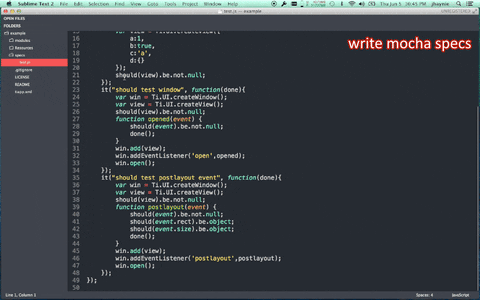
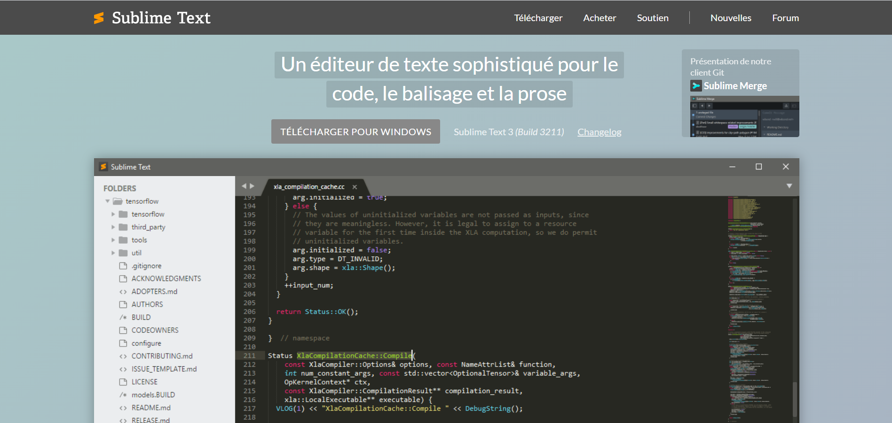
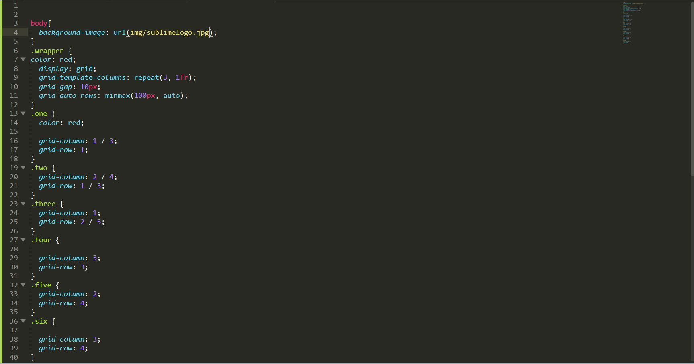

Sublimetexte
Sublime Text est un éditeur de texte générique codé en C++ et Python, disponible sur Windows, Mac et Linux. Le logiciel a été conçu tout d'abord comme une extension pour Vim, riche en fonctionnalités.
Depuis la version 2.0, sortie le 26 juin 20122, l'éditeur prend en charge 44 langages de programmation majeurs, tandis que des plugins sont souvent disponibles pour les langages plus rares.




le CSS
